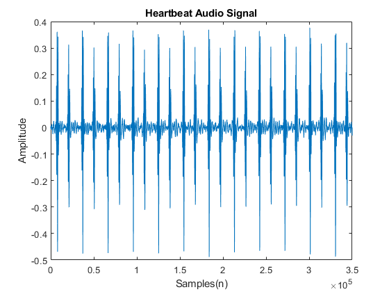
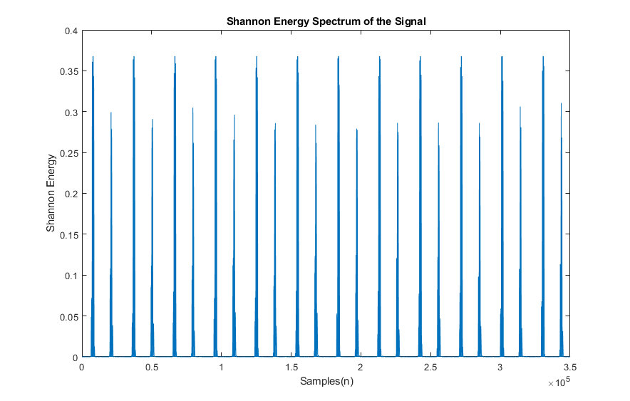
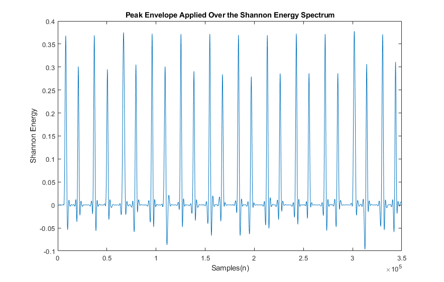
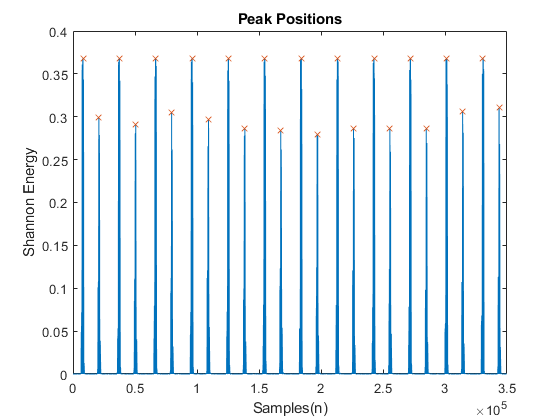
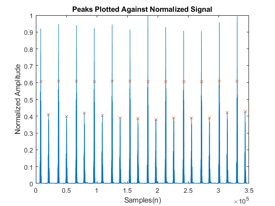

Data pre-processing is often a necessary step when using any signal, It allows us to enhance specific features, get rid of unnecessary ones and most importantly, it allows us to transform the input signal into a form which is easier for us to process.
Today, I’ll be going over the steps that I took in pre-processing heartbeat audio data with the idea in mind that the data would ultimately be used by a Convolutional Neural Network to classify different heart sounds.
As usual, the entirety of the code for this project, including the code for the other parts of the project, can be found over here. If you’re curious about the data-set that was used, that can be found over here.
The turbulence created in blood flow when a healthy heart function generates heart sounds. For a healthy adult, heart sounds typically involve two components: a S1 ‘lub’ sound followed by a S2 ‘dub’ sound. These are produced by the closing of the atrioventricular valves and the semi lunar valves respectively. The sounds made by a heart during normal function can be recorded to generate phonocardiograms. These phonocardiograms can then be analyzed to determine whether or not the heart is functioning properly. In this project, an attempt was made to classify various heart diseases based off of time-dependent patterns present within a phonocardiogram.
As can be seen at the link provided, only about 179 files were provided overall. An interesting problem was that the number of files that was provided for each of the categories - artifact, murmur, extrahls and normal- was far too few to train a CNN reliably. Hence, if each individual heartbeat could be extracted, the CNN would have a greater number of data points to work with. Furthermore, the period and the frequency of a patient’s heartbeat cycle depends on their physical and physiological state[1]. Hence, it is possible for the network to misclassify a particular recording based off of the number of heartbeats recorded.
To solve this, a method was necessary to isolate individual heartbeats from each audio file. While there may be several methods to achieve this, in this particular project, we chose to use the method of S1 and S2 peak isolation to identify a ‘lub-dub’ pair. Once this was done, the sample exactly midway between each S1 and S2 pair is found and stored in an array. Subsequently, the samples midway between these are found. This gives us a list of points which can be used to separate each S1 and S2 pair.
While this sounds fairly easy on the face of it, we’re in a real pickle when it comes to detecting S-R peaks. While S-R peaks have amplitudes relatively larger than the electronic noise present in the signal, the presence of false peaks make it difficult to distinguish the true peaks from that false ones. To tackle this, I had to delve into the current literature present on the topic with one goal in mind; a method that is effective yet simple to implement. In effect I needed something that, despite only working under specific constraints, is able to isolate the S1 and S2 peaks with a great enough accuracy. Hence, I ended up using Shannon Energy Envelopes for peak isolation as outlined in [2].
To begin with, we load the heartbeat audio and normalize and the signal using the following normalization equation[1].
\[\begin{aligned} a[n] = \left (\frac {|f[n]|}{max_{i=1}^{N} |f[n]|} \right )^2 \end{aligned}\]where a[n] is the normalized amplitude and f[n] is the input signal to the system.
| Input Signal | Normalized Shannon Waveform |
|---|---|
|  |
While it not necessarily typical to square the signal, it is a bit simpler to isolate S1 and S2 peaks of a heartbeat signal when we don’t have to work with negative amplitudes for a signal.
Once the signal has been normalized, we begin to calculate the Shannon Energy of the signal. As is evident from their name, this method depends on the calculation of the energy of the signal. So before I get into calculating the Shannon Energy, I’ll briefly touch on the energy of a discrete signal and how it relates to the Shannon Energy of the same.
In general, for a discrete signal, the energy of the signal, $E_s$, is given by,
\[\begin{aligned} SE = -|a[n]|log(a[n]) \end{aligned}\]Subsequently, the Shannon Energy spectrum is computed using,
\[\begin{aligned} s[n] &= -a^2[n]log(a^2[n]) \nonumber \\ s[n] &= \frac{s[n] - \mu}{\sigma} \end{aligned}\]As can be seen below, on computing the Shannon Energy the peaks associated with the S1 and S2 components of the heartbeat audio are more prominent compared to the amplitude to other parts of the signal.

While it looks like the above plot is where we stop and isolate the positions of the peaks, further steps are in fact required. Due to the presence of numerous smaller peaks in the vicinity of the true peak, even if we compute local maximas over say every 2,500 samples, we would get a number of false peaks nearby the true peak. To overcome this, we smooth the signal before peak isolation.
In general, a signal envelope can be defined as a smooth curve connecting all of the extremes of an oscillating input signal[4]. Natively, MatLab offers a variety of enveloping methods. This ranges from envelopes computed using Hilbert Transforms to RMS enveloping. Details of the same can be seen on the official MatLab documentation page over here.
In this particular case, peak envelopes were used only taking into account local maxima a thousand samples apart. While it is possible to manually implement this using the relevant equations, in this case, for simplicity, MatLab’s inbuilt ‘envelope()’ function was used. On enveloping the Shannon spectrum of the signal, we observe the following.

From here, the positions of the local maximas were isolated and saved into an array. Additionally the sample positions associated with the corresponding maxima were determined. In simpler words, the time at which these peaks occurred were determined. These local maximas superimposed over the Shannon Energy Spectrum produces,

Once these were figured out, these points were superimposed on the original normalized signal to test as to whether it was a reasonable estimate of the S1 and S2 peaks of the heartbeat audio.

As can be seen, while this method is not entirely accurate when determining the position of the S1 peaks. However, this is not too much of a problem since we only need an estimate of the positions of the S1 and S2 peaks for the segmentation part.
For segmenting the signal, the midpoint between every S2 and the following S1 peak is calculated. Then, logically, it follows that a single heartbeat sound is from one midpoint to the next. The original audio was then subdivided into smaller files each containing a single heartbeat sound.
Once individual heartbeats were isolated, a method of method of data representation was required such that it satisfied two conditions. One was that it should retain information regarding its time dependence. This meant that it was important that the CNN took into account the variation of the signal over time when making a prediction. The second condition was that the data should be in a form that can be fed into a CNN. Most suitably, the data should be represented in the form of an image. As a consequence of these constraints, spectrograms were generated from the data before being being used to train the CNN.
So to begin with, what are spectrograms? Essentially, spectrograms are a visual representation of the change in the frequency components of a signal over time. Essentially, you take snapshots across small intervals in the signal and compute the frequencies present in the signal for that duration. Then you represent this spectrum as a heat map. More formally, the Short Time Fourier Transforms are computed for the specified windows and the magnitude is represented as a heat map.
Here, the Matlab function ‘spectrogram()’ was used to compute the spectrogram of each individual heartbeat. Internally, this function computes the STFT of the signal and represents it in the form of an image as seen below. Details on the usage and the nature of the output can be read here. The result of this is shown in the figure below.
M. Yochum, C. Renaud, and S. Jacquir, “Automatic detection of P, QRS and T patterns in 12 leads ECG signal based on CWT,” Biomedical Signal Processing and Control, vol. 25, pp. 46–53, 2016
Hamed Beyramienanlou and Nasser Lotfivand, “Shannon’s Energy Based Algorithm in ECG Signal Processing,” Computational and Mathematical Methods in Medicine, vol. 2017, Article ID 8081361, 16 pages, 2017. https://doi.org/10.1155/2017/8081361.
M. S. Manikandan and K. P. Soman, “A novel method for detecting R-peaks in electrocardiogram (ECG) signal,” Biomedical Signal Processing and Control, vol. 7, no. 2, pp. 118–128, 2012.
C. Richard Johnson, Jr; William A. Sethares; Andrew G. Klein (2011). “Figure C.1: The envelope of a function outlines its extremes in a smooth manner”. Software Receiver Design: Build Your Own Digital Communication System in Five Easy Steps. Cambridge University Press. p. 417.